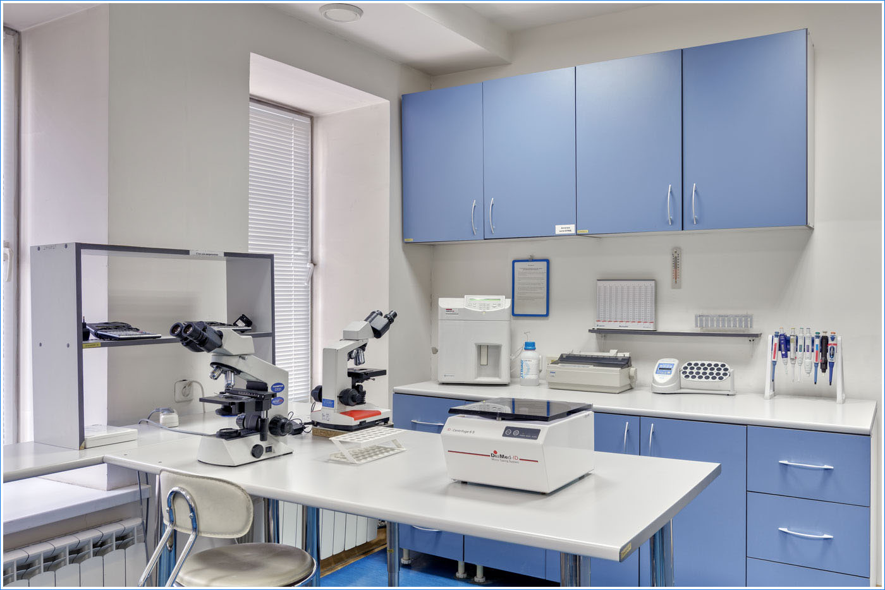

На анализы собственной лаборатории
Проверьте, какие исследования участвуют в акции, и добавьте нужные в заказ.
01 · Узнаваемая клиника и быстрый выбор. Главная задача S01 — найти исследования; S05/S10 — выбрать маршрут обследования.
При необходимости запишитесь на приём к врачам со стажем до 52 лет для расшифровки результатов и получения подробного заключения!
* Скидка 30% действует на участвующие исследования собственной лаборатории до 30 ноября 2026 года.
02 · Главная товарная витрина: все десять программ из выбранных предложений. Кликабельная плитка ведёт на будущую страницу программы. Программы сопровождаются оригинальными рисованными иллюстрациями.
Состав, цена и участие врача — в каждой программе.
Подходящий состав обследования определяется с учётом назначения и рекомендаций врача. Условия программ и стоимость подтверждаются при записи.
03 · Механика KDL: название → краткое описание → срок → цена → добавление. Это редакционная подборка для прототипа, не рейтинг продаж МЦОЗ. Заголовок «Популярные» подтвердить данными клиники.
Можно добавить по одному и собрать свой список.
Цены исследований — по прайсу клиники. Забор биоматериала оплачивается отдельно, если не включён в выбранную программу. Условия скидки администратор проверит при подтверждении заказа.
04 · Один основной акцент на скидке лаборатории и два самостоятельных предложения. Без выдуманного таймера, общей скидки на весь каталог и повторного применения скидок к пакетам.
Проверьте, какие исследования участвуют в акции, и добавьте нужные в заказ.
Программа для первичных пациентов.
6 960 ₽Скидка 50% на отдельные приёмы специалистов и рентгенологические исследования. До 30 ноября 2026.
05 · Объяснить, что корзина — предварительный заказ без платежа. Убрать неопределённость стоимости, подготовки и следующего контакта.
Добавьте анализы или программу в корзину. Увидите стоимость выбранных позиций.
Администратор свяжется с вами, уточнит состав, итоговую цену, подготовку и время визита.
Пройдите согласованные исследования. Сроки и способ получения результатов уточняются при записи.
Поможем уточнить названия исследований и рассчитать заказ.
20 лет опыта и стандарт качества ISO 9001:2015

Автоматические анализаторы для биохимии и исследования крови, микроскопы Carl Zeiss и Olympus. Современное оборудование для разных задач диагностики.
Международный стандарт управления качеством: понятные процедуры, ответственность сотрудников, проверка процессов и постоянное улучшение работы.
МЦОЗ — многопрофильная клиника с 20-летней историей и опытными специалистами. Здесь можно обсудить результаты и дальнейшие шаги с профильным врачом.
Клиника является клинической базой РНИМУ им. Н. И. Пирогова — медицинского университета, который готовит врачей и развивает медицинскую науку.
07 · Материалы для пациентов. Перед публикацией требуется медицинская редакция.
08 · Короткие ответы на барьеры из исследований: оплата, скидка, забор, срок, консультация. Не обещаем свойства, которые клиника ещё не подтвердила.
Нет. Вы оставляете предварительный заказ. Администратор согласует детали и запись; онлайн-оплата не требуется.
Акция относится к исследованиям собственной лаборатории. Участие конкретного анализа и итоговую стоимость необходимо проверить перед записью.
Это зависит от услуги. Для отдельных исследований стоимость забора уточняется отдельно. Если забор включён в программу, это указывается в её составе.
Срок зависит от исследования. В прайсе для анализов из подборки указан один день. При подтверждении заказа администратор уточнит дату готовности всего списка.
Только если она прямо указана в составе программы. Для отдельных анализов консультация оформляется отдельно. Условия повторного приёма уточняются при записи.